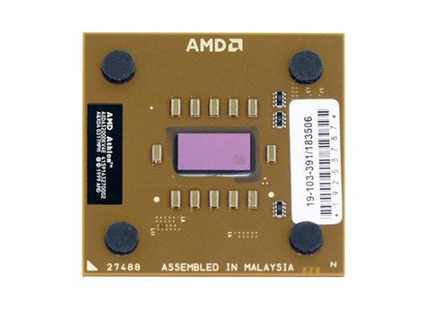

Intel Pentium III
Manufacturer: Intel
Released: 1999
Format: Slot 1
The Intel Pentium III was a popular processor during the late 1990s and early 2000s.
A collection of classic processors from the 1980s, 1990s and early 2000s.
Manufacturer: Intel
Released: 1999
Format: Slot 1
The Intel Pentium III was a popular processor during the late 1990s and early 2000s.

Manufacturer: AMD
Released: 2003
Format: Socket A / 462
The Intel PIII killer aka AMD Athlon XP.